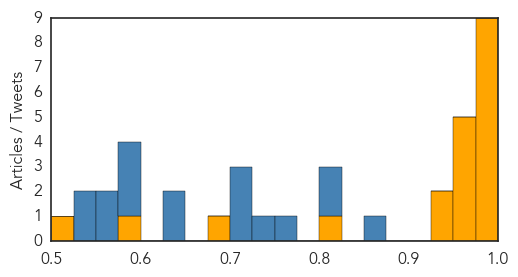
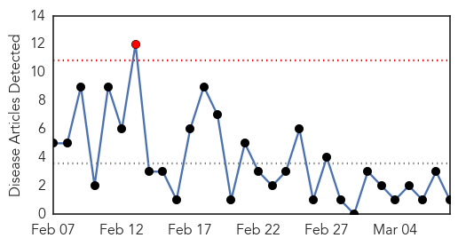

Ebola
30-Day Web Trend
0 alerts, 0 warnings

30-Day Twitter Trend
3 alerts, 5 warnings

Article Locations
Article Confidences
Top Articles:
- 1.000
- Last Ebola patient is released in Liberia Republican American
- 1.000
- Last Ebola patient is released in Liberia
- 0.999
- Antiseptic shows 99.9% efficacy against Ebola virus
- 0.999
- Despite reported decline, struggle against Ebola continues
- 0.999
- Did experimental vaccine shield doctor from Ebola?
- 0.998
- The Ebola Breakout Coincided with UN Vaccine Campaigns
- 0.994
- Preventing Ebola could be a scrub away!
- 0.993
- Liberia removes Ebola crematorium as outbreak is contained
- 0.983
- Why Is The VP Of Sierra Leone Running The Country By Laptop?
- 0.951
- Sierra Leone ruling APC party explains why it expelled vice president Sam Sumana
- 0.951
- Amendments in Juvenile Justice Act to remain
- 0.951
- Have a sense of purpose in life to protect heart
- 0.951
- Homeless Sierra Leone athlete held
- 0.951
- Two men detained over Nemtsov assassination in Moscow
- 0.928
- Correct Ebola ‘missteps’ to prevent future outbreaks
- 0.928
- International Women's Day: women as agents of change against Ebola
- 0.822
- WHO Begins Ebola Vaccine Trial in Guinea
- 0.676
- and a whole village was punished
- 0.580
- Masterton ebola nurse back home
- 0.525
- Delivering Vehicles to the Ebola Hot Zone
Top Tweets:
- 0.981
- Last Ebola Patient Leaves Hospital in Liberia - Town Hall http://t.co/MWFTSsLCjL ebola EVD
- 0.974
- Liberia removes Ebola crematorium after last patient is cured, country's ... - U.S. News & World Report http://t.co/uP6PGCZQb0 ebola EVD
- 0.968
- Liberia Removes Ebola Crematorium as Outbreak Is Contained - ABC News http://t.co/UMb4vS747V ebola EVD
- 0.953
- Did experimental vaccine shield doctor from Ebola? - Futurity: Research News http://t.co/Dqig6GzHRe ebola EVD
- 0.904
- Sierra Leone athlete fleeing Ebola freed and given accomodation after public ... - The Independent http://t.co/fb3i6ZiLvU ebola EVD
- 0.904
- Sierra Leone athlete fleeing Ebola freed and given accomodation after public ... - The Independent http://t.co/1ZCdjRnzuO ebola EVD
- 0.868
- U.S. Army Pfc. Gilbertson put fears aside to help build Ebola treatment ... - Kearney Hub http://t.co/xPGGZeoszN ebola EVD
- 0.849
- RT: Locking in Ebola: A specific calcium channel is required for Ebola virus to infect a cell http://t.co/tKFYWfXnfk htt…
- 0.829
- Celebrating the woman who discovered Nigeria's Ebola patient zero and curbed ... - The Independent http://t.co/Eo2OeMHR3s ebola EVD
- 0.796
- Getting Ebola to Zero - New York Times http://t.co/tVAQCPUGnk ebola EVD
- 0.796
- Ebola Vaccine Given For Just Second Time; A 7th Person In Chicago Tested For ... - CBS Local http://t.co/N6hwOPzp9F ebola EVD
- 0.777
- WHO health agency announces start of Ebola vaccine testing in worst-affected areas of Guinea http://t.co/oFd0P0Dm23
- 0.611
- Toronto doctor returns from front line of Ebola fight - Toronto Star http://t.co/wC812Innze ebola EVD
- 0.611
- Toronto doctor returns from front line of Ebola fight - Toronto Star http://t.co/8FnFX4RYiA ebola EVD
Meningitis
30-Day Web Trend
1 alerts, 0 warnings

30-Day Twitter Trend
2 alerts, 0 warnings

Article Locations
Article Confidences

Top Articles:
Top Tweets:
-
No tweets found for Mar 08, 2015